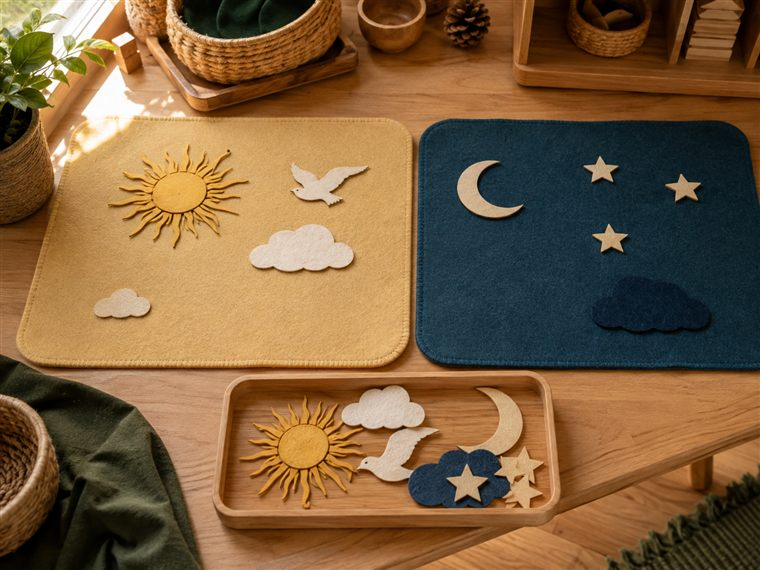
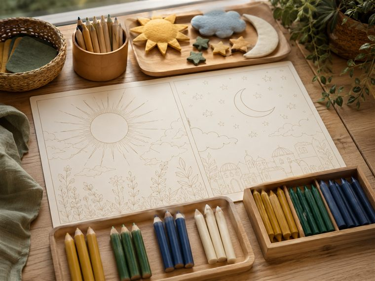
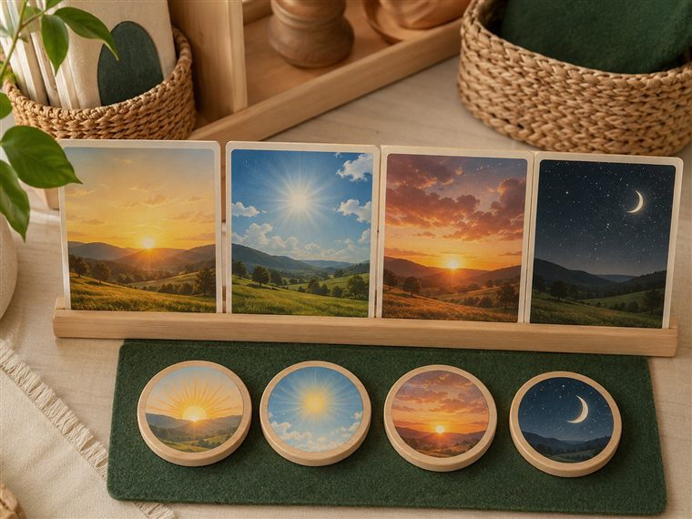
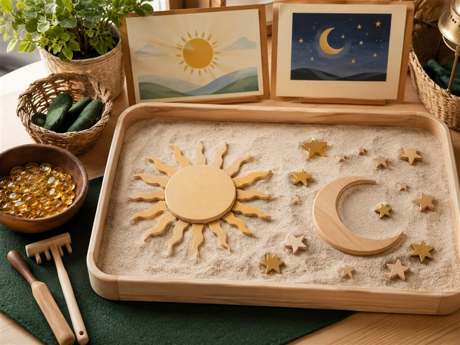

🌱 معنى اليوم · «الليل والنهار آيتان؛ أتفكّرُ وأشكرُ وأعملُ الصالحات»
مساحاتُ لعبٍ حرّ. لكثرة الأعداد نفتح ٤ أركانٍ متوازية بمراكز مختلفة؛ وزّعي المجموعات عليها وتتناوب بينها في الفترتين حتى لا تتكدّس. كل ركنٍ لمسةٌ تكاملية مع اللعب. (أعمار ٥–٦: بناء/تلوين جاهز/قصّ ولصق/ترتيب/اختيار بطاقات/أدوار/حركة — بلا كتابة أو رسمٍ حرّ.)

🔎 أكتشف ما حولي · «مخلوقاتُ السماء نهارًا وليلًا»
يستكشفُ الطفل بحرّية، ثم يصنّفُ بطاقاتٍ مصوّرة جاهزة لما نراه في السماء: نهارًا (الشمس · الطيور بلا ملامح) إلى سلّةٍ مضيئة، وليلًا (القمر · النجوم) إلى سلّةٍ معتمة، وينقلها حركةً ويردّد «آيةُ النهار» و«آيةُ الليل».
🧰 الأدوات: بطاقاتُ الفرز المصوّرة الجاهزة (شمس · طيور بلا ملامح · قمر · نجوم) · سلّتان (فاتحة/داكنة) · عدسةٌ مكبّرة للتأمّل · عيّناتٌ طبيعية.
📋 دور المعلمة: تتيح الاستكشافَ الحرَّ أولًا، ثم تسأل: «ماذا نرى في السماء نهارًا؟ وماذا نرى ليلًا؟ ومَن خلقها ووهبنا الليلَ والنهار؟»؛ تربط العطاء بالوهّاب وتغرس التفكّرَ وشكرَ النعمة.
🌱 المعنى المركزي: الليلُ والنهار آيتان من الوهّاب؛ أتأمّلُ فيهما وأشكرُ عطاءه.
📜 قوانين الركن: أبقى في ركني حتى ينتهي الوقت · أحافظ على أدواته · أتشارك وأنتظر دوري · أُعيد الأدوات مرتّبة.

🎨 فنوني الجميلة · «ألوّنُ نهاري وليلي»
يلوّن الطفل مشهدًا جاهزًا نصفُه نهار ونصفُه ليل، ثم يقصّ ويلصق الشمسَ في جهة النهار والقمرَ والنجومَ في جهة الليل، ويردّد «آيتان من الوهّاب».
🧰 الأدوات: ورقةُ المشهد الجاهزة للتلوين (طباعة) · أقلام تلوين · بطاقاتُ الآيات المصوّرة · مقصٌّ آمن ولاصق.
📋 دور المعلمة: تسمّي الآيتين وتربطهما بالوهّاب المُنعِم؛ تعين على القصّ واللصق؛ تُثني على المشاركة والفرح لا على الإتقان الفنّي.
🌱 المعنى المركزي: النهارُ آيةٌ والليلُ آية؛ كلاهما عطاءٌ من الوهّاب أشكرُه عليه.
📜 قوانين الركن: أبقى في ركني حتى ينتهي الوقت · أحافظ على أدواته · أتشارك وأنتظر دوري · أُعيد الأدوات مرتّبة.

🧩 أدرك وأستمتع · «أشاهدُ الشروقَ والغروبَ وأرتّبُ يومي»
يشاهدُ الطفل مراحلَ الشروق والغروب بالصور، ثم يرتّب بطاقاتِ تسلسلٍ مصوّرة جاهزة (شروقٌ · نهار · غروبٌ · ليل) على لوحة، ويطابق كلَّ مشهدٍ بموضعه، فيدرك تعاقبَ الليل والنهار بحكمةٍ منظّمة.
🧰 الأدوات: بطاقاتُ مراحل الشروق والغروب والتسلسل المصوّرة الجاهزة · لوحةُ ترتيبٍ ومطابقة · بطاقتا (نهار/ليل) للتصنيف.
📋 دور المعلمة: تعرض مراحلَ الشروق والغروب وتعين على ترتيب التعاقب وتسأل «ماذا بعد النهار؟»؛ تربط النظامَ الدقيق بحكمة الله وتغرس التفكّر.
🌱 المعنى المركزي: تعاقبٌ منظّمٌ بحكمةٍ من الله؛ أتفكّرُ في تدبيره وأشكر.
📜 قوانين الركن: أبقى في ركني حتى ينتهي الوقت · أحافظ على أدواته · أتشارك وأنتظر دوري · أُعيد الأدوات مرتّبة.

🏖 ركن الرمل · «أشكّلُ الشمسَ والقمرَ»
يشكّل الطفل في الرمل قرصَ الشمس وهلالَ القمر والنجمةَ بالقوالب، ويردّد «آيتان»؛ لمسةٌ حسّية تربط عطاءَ الوهّاب بالشكر في السرّاء والصبر في الضرّاء (الشافي).
🧰 الأدوات: رملٌ نظيف · قوالبُ (دائرة · هلال · نجمة) · أدواتُ تشكيل · صواني.
📋 دور المعلمة: تدير التشكيلَ الحسّي بمرح؛ تربط الآيتين بعطاء الوهّاب وتغرس الشكرَ في السرّاء والصبرَ في الضرّاء والرضا بقضاء الله.
🌱 المعنى المركزي: أشكّلُ آياتِ ربي وأشكرُ عطاءه، وأصبرُ راضيًا عند الابتلاء.
📜 قوانين الركن: أبقى في ركني حتى ينتهي الوقت · أحافظ على أدواته · أتشارك وأنتظر دوري · أُعيد الأدوات مرتّبة.